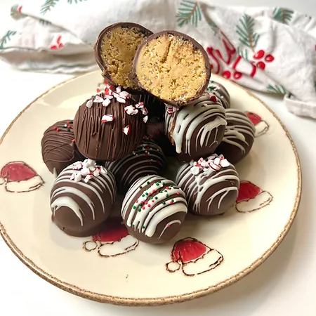

Trufas de mantequilla de maní
Estas trufas de mantequilla de maní cubiertas de chocolate son muy riquísimas, rápidas de hacer y perfectas para cualquier época del año, especialmente para navidad ya que se pueden adornar muy bien con chispas de colores que tengan temática navideña. ¡Con esta receta se pueden hacer de 15 a 20 trufas de mantequilla de maní aproximadamente!

Ingredientes:
Trufas y bañado de chocolate:
- 1 taza de mantequilla de maní cremosa
- 1/4 taza de mantequilla sin sal, derretida o muy blanda (temperatura ambiente)
- 3/4 tazas de azúcar en polvo
- 1 3/4 tazas de rice krispies (opcional)
- 2 tazas de chispas de chocolate semidulce
- 2 cucharadas de aceite de coco
Decoración:
- 1/4 taza de chocolate blanco (opcional)
- chispas de colores o de chocolate (opcional)
Preparación:
Trufas y bañado de chocolate:
- En un tazón grande, mezcla la mantequilla de maní y la mantequilla hasta que quede suave y cremosa. Puedes usar una espátula de silicona para este paso.
- Mezcla el azúcar en polvo hasta que esté completamente integrado.
- (opcional) Agrega los Rice Krispies hasta que estén distribuidos uniformemente en toda la mezcla de mantequilla de maní.
- Saca y haz bolitas de la mezcla (el tamaño equivale a aprox. 3 cucharadas), luego ponlos en una bandeja para hornear con papel mantequilla o de cocina (para que no se peguen tanto).
- Una vez que hayas hecho bolitas hasta que toda la mezcla se haya ido, déjalas reposar por 1 hora. También coloca una bandeja en el refrigerador por aproximadamente 1 hora, para que se endurezca y esté lista para colocar las trufas después.
- Después de una hora, en un recipiente apto para microondas agrega las chispas de chocolate y el aceite de coco. Derrite el chocolate dentro del microondas por 30 segundos y mezcla bien (es posible que debas ponerlo al microondas varias veces) hasta que el chocolate esté completamente derretido y suave. Otra opción es derretirlo a baño maría en una cacerola a fuego bajo, cuidando de revolver bien y que no caiga agua al chocolate.
- Usa un palillo o un tenedor para sumergir cada bolita de mantequilla de maní en el chocolate derretido. Deja que se escurra un poco el exceso de chocolate antes de volver a colocarlos en la bandeja previamente enfriada.
- Una vez que se hayan cubierto con el chocolate, vuelve a colocarlos en el refrigerador durante unos 15 minutos para que se endurezcan.
Decoración
- Mientras tanto puedes preparar los toppings de tu elección. Puedes usar chocolate blanco o el chocolate semidulce sobrante para decorar las trufas.
- Tambien puedes colocar encima chispitas de colores o de chocolate según sea tu elección.
Guardado:
- Las trufas se pueden mantener en perfecto estado dentro del refrigerador por al menos 4-5 días, luego empiezan a endurecer un poco pero aún pueden comerse.